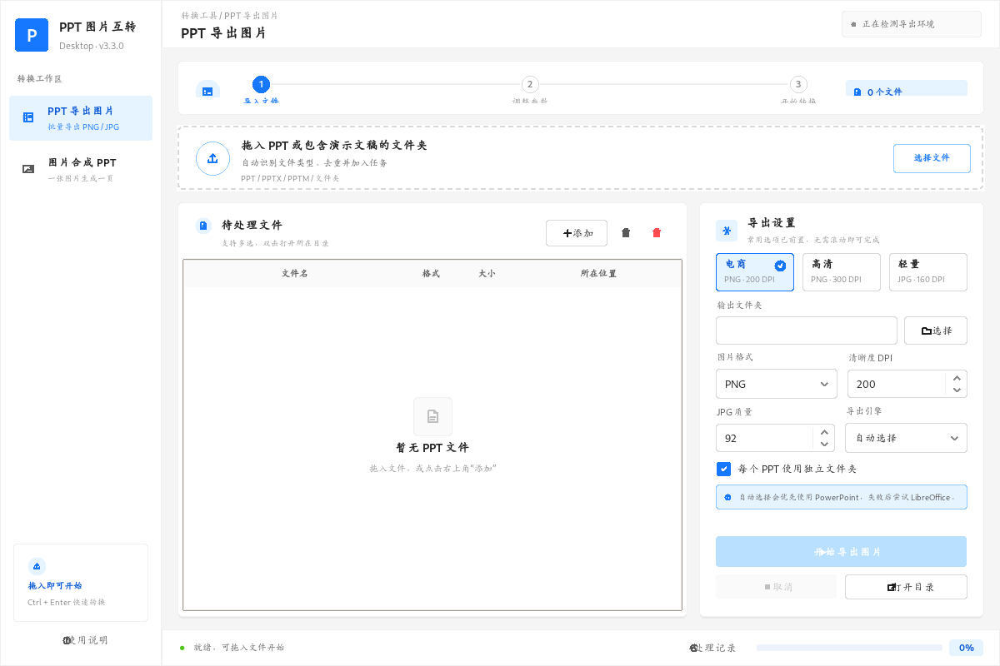
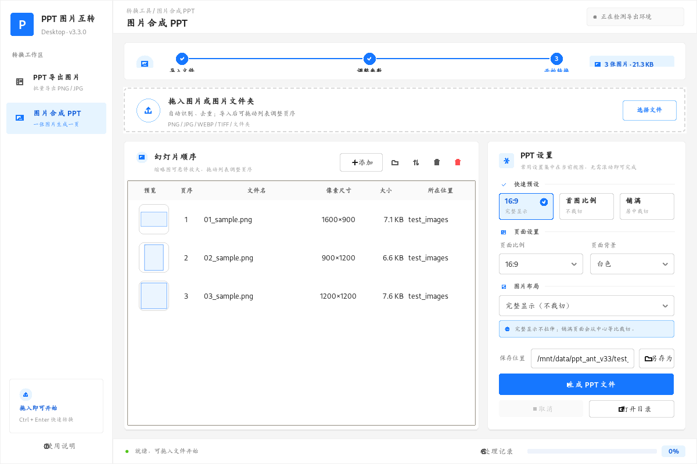

开始前
双击 EXE 即可使用。若你要将 PPT 导出为图片，请先安装 Microsoft PowerPoint 或 LibreOffice。
01 · 选择模式左侧切换“PPT 导出图片”或“图片合成 PPT”。
02 · 导入素材点击添加，或直接把文件、文件夹拖进窗口。
03 · 设置并执行在右侧选择参数，点击蓝色主按钮完成转换。
教程一：PPT 批量导出图片
- 切换到 “PPT 导出图片”。
- 拖入一个或多个
.ppt、.pptx或包含它们的文件夹。 - 在右侧选择 PNG/JPG、DPI 和输出目录。
- 点击 “开始导出图片”，进度与结果会显示在底部状态栏。

建议：网页与电商图用 PNG + 200 DPI；印刷或局部放大用 PNG + 300 DPI；需要较小文件时用 JPG + 90–95 质量。
教程二：多张图片合成 PPT
- 切换到 “图片合成 PPT”。
- 拖入图片或图片文件夹，支持 PNG、JPG、WEBP、TIFF 等。
- 直接拖动列表中的行调整幻灯片页序；缩略图悬停可放大预览。
- 选择页面比例、背景和图片布局，设置保存位置后点击 “生成 PPT 文件”。

| 布局 | 适用情况 |
|---|---|
| 完整显示（不裁切） | 保持图片全部内容，可能留白。 |
| 铺满页面（居中裁切） | 视觉更饱满，边缘内容可能被裁掉。 |
常见问题
找不到可用导出引擎
安装 Microsoft PowerPoint，或安装免费 LibreOffice 后重新打开工具。
导出的字体、版式有变化
优先使用 Microsoft PowerPoint 导出，并确保系统已安装演示文稿所使用的字体。
JPG 背景变白
JPG 不支持透明通道；如需透明背景，请使用 PNG。
提示：拖放不工作时，请确认应用没有以管理员权限启动；Windows 不允许低权限资源管理器向管理员程序拖放文件。